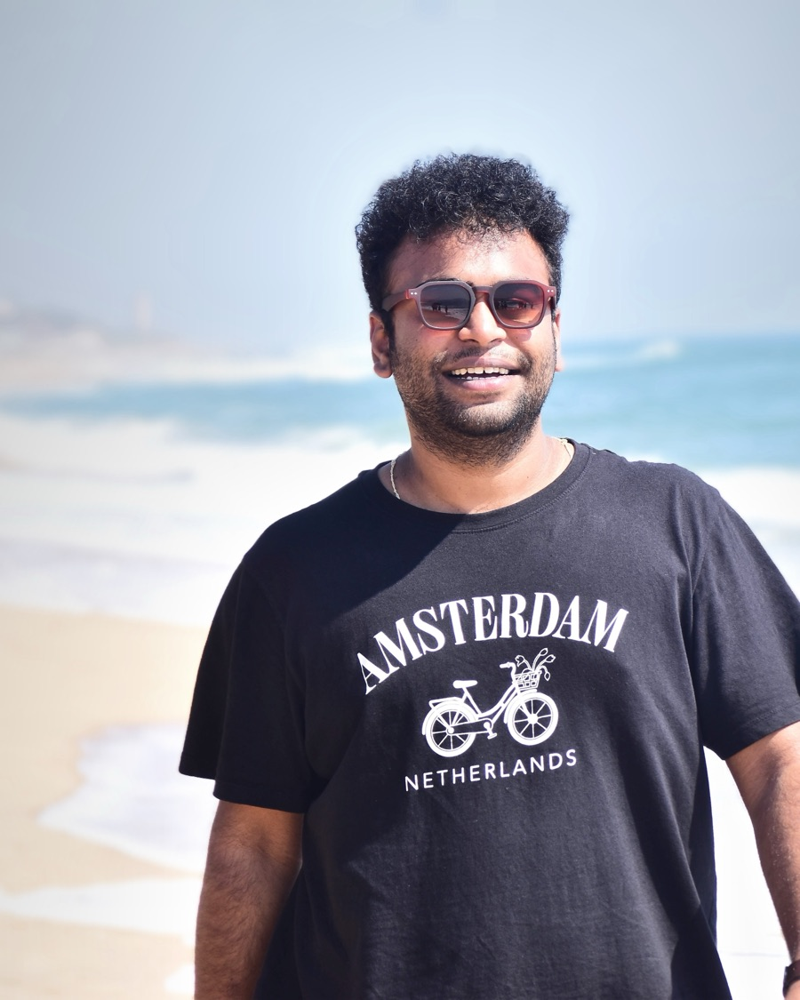

Retrieval that cites its sources
Our own crawlers, Airflow fanning chunking out across workers, Nomic embeddings and Elasticsearch as the vector store, so answers are grounded in real product knowledge.
answer.cite(context)
▲ 17.38°N 78.48°E · Hyderabad, India
Hi, I'm
Muthya Varshith Vankamamidi · Senior Software Engineer, Agentic AI @ Workato
I build AI agents for customer support at Workato. Six years in and still climbing.

What I build day to day: a ticket comes in, the right knowledge is found, an agent reasons and acts, and a human gets pulled in only when it matters.
A Python class named Varshith that extends an AI Agent: it retrieves context from a support knowledge base, reasons with an LLM, hands off to a human when confidence is low, and otherwise sends a cited answer.
Our own crawlers, Airflow fanning chunking out across workers, Nomic embeddings and Elasticsearch as the vector store, so answers are grounded in real product knowledge.
answer.cite(context)
Agents whose skills are Workato recipes and connectors, with a flow engine between the agent and the decision tree that hands off to a human agent when the AI can't answer.
if conf < 0.85: handoff()
A PII service for seven Asian languages: LoRA-tuned classifiers plus rule-based checks, 99.9998% accurate across 2M conversations, with guardrails on every model upgrade.
redact(ticket, lang="ja")
Six years, one long climb. Every role is a commit, newest first; open one for the full diff.
Building agentic AI for customer support: a PII redaction service for seven Asian languages, an event-driven voice & chat pipeline, and the Zendesk Copilot.
Lead engineer of AgentX Support, Workato's AI support platform: AI agents, a RAG knowledge pipeline, human handoff and analytics, built from scratch.
Joined right before the acquisition and led the migration of DeepConverse's entire support platform into Workato with Terraform and Kubernetes.
Built the event-driven testing platform that let the whole company ship faster, and Phoenix, which repairs broken UI tests on its own.
Built the Slack bots and infrastructure-as-code tools every team used to deploy and test, and won a Kudos Award.
Joined through the Winter Interns 2022 program, worked on reliability engineering on AWS and Kubernetes, and converted to full-time.
Built a legal search product end to end: users find the past civil court rulings most relevant to their case, served by a cell-based, serverless backend on AWS.
Self-employed
Flask and Django apps for clients, with APIs, auth and payments, while still in college.
NIIT University
Led the tech team for siNUsoid, the university's science and tech fest.
Awards and certifications. Click one to open it full size.
HackerRank employee award for building a video-recording framework that generated data for ML-based plagiarism detection.
Prefer the command line? Type help. Press ⌘K or / anywhere to jump here.